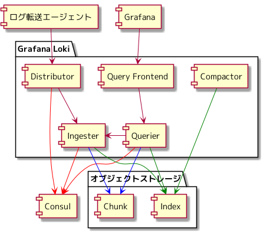

さくらインターネット Advent Calendar 2021 19日目の記事になります。
現在、「さくらの専用サーバ PHY」のログ管理基盤にて、 Grafana Loki を利用しています。
今回は、 Graylog を使ったログ管理基盤 を運用し得られた知見、 「さくらの専用サーバ PHY」での Grafana Loki のアーキテクチャと Graylog の運用と異なる点はどうであるかについて書いていきます。
Graylog を運用し得られた知見
Graylog は、メンテナンスなどの計画された作業以外では、 一度も停止することなく「さくらの専用サーバ PHY」のログ基盤を支えてくれました。 Graylog を2年半運用し得られた知見のいくつかを紹介することで、 Graylog を使っていない方々に運用のイメージを持ってもらえたらと思っています。
Elasticsearch での型によりログが保存されない
ログの保存先である Elasticsearch は、 Key, Value という形でログを保持しており、 Value には、 integer, string などの型が付いています。 型は、自動でマッピングされます。
https://www.elastic.co/guide/en/elasticsearch/reference/current/mapping-types.html
例えば、 status という Kye を持ったログの Value の型が string だった場合に、 status: ok のログを出力するアプリケーションのログは、 Elasticsearch に保存されますが、 status: 200 のログを出力するアプリケーションのログは、 Elasticsearch の型とは異なるため、 Graylog が下記のエラーを吐き、 Elasticsearch にはログが保存されないということが起きます。
2020-06-03 17:15:56,386 WARN : org.graylog2.indexer.messages.Messages - Failed to index message: index=<graylog_259> id=<eb0f6651-c443-11eb-87fd-4e70a9bac08c> error=<{"type":"mapper_parsing_exception","reason":"failed to parse field [status] of type [long] in document with id 'eb0f6651-c443-11eb-87fd-4e70a9bac08c'","caused_by":{"type":"illegal_argument_exception","reason":"For input string: \"Initial\""}}>
Elasticsearch に詳しくならなくても、 Graylog を使えてしまうので、 チームメンバーから「何か特定のアプリケーションのログが検索に引っ掛からないのだけれど」ということを言われ、 調査したことにより、状況を把握し、対処する結果となりました。
対処方法は、2つあります。
1つ目は、 status: ok, response_code のようにログを出力するアプリケーションのほうで、 Key の名前を変更するという方法になります。
内製のアプリケーションであれば、ログの出力を変えるコストは少ないですが、 そうでないものを利用している場合は、 Key を変えるというとができなかったります。 2つ目は、 Elasticsearch で指定した Key の Value の型を明示するという方法になります。
Elasticsearch を利用していることにより、 同じ Key の Value の型をどう取り扱うかの対応が発生し続けます。
ストレージ拡張
サービスが売れれば、売れるほどログを転送してくるエージェントも増加していくため、 Graylog には、3ヶ月ぶんの ログを保存すると決め、ストレージの容量を見積ったとしても、 気が付けば、2ヶ月ぶんしかログを保存できなくなっていたということになっていました。
Elasticsearch を1台ずつ停止していけば、 ログの保存は継続したままストレージを拡張することは可能ですが、 Elasticsarch のために利用している数テラバイトのストレージを拡張するのには時間が掛かります。 指定した期間 Graylog にログを保存したいという要件のために、 定期的にストレージを拡張するという作業が発生するため、運用の負荷として跳ね返っていました。
チューニングをしていたわけではありませんが、 Elasticsearch のクラスタというストレージを維持し続けるのに心理的な負荷がありました。
Grafana Loki でのログ管理のアーキテクチャ
Graylog でのログ管理から、型を管理すること、 ストレージを維持するという負荷から解放されたいなと思っていたところに、 Grafana Loki でのログ管理を見出しました。 下記は、「さくらの専用サーバ PHY」での Grafana Loki を使ったログ管理のアーキテクチャになります。

Grafana Loki は、複数のコンポーネントから構成されています。 Grafana Loki の各コンポーネントについては、下記のリンク先に詳細が書かれているため、そちらにお任せします。 ( これらの内容が公開されるより前から、 Grafana Loki の利用を進めていましたが、 自分はここまでの理解して Grafana Loki を使えていなかったので、とても勉強になりました。 )
構成
- Loki Version: v2.2.1
- Chunk Storage: オブジェクトストレージ
- Index Storage: オブジェクトストレージ + BoltDB Shipper
Compactor
紹介した記事には、 Compactor の説明は無いので、これだけ書きます。
https://grafana.com/docs/loki/v2.2.1/operations/storage/boltdb-shipper/#compactor
BoltDB Shipper を使う場合に利用するコンポーネントになります。 1つの Ingester が、1日あたり、96ファイルを作成し、多くの重複するインデックスエントリーを含むため、 Index の重複排除し、すべてのファイルをテーブルごとに1つのファイルにマージすることで、 Index のサイズを縮小します。 圧縮することで、ログ検索のパフォーマンス低下を防ぐ効果があるようです。
Note: There should be only 1 compactor instance running at a time that otherwise could create problems and may lead to data loss.
と公式のドキュメントには書かれていたので、 Compactor のプロセスは、1つだけ起動させています。
Grafana Loki v2.2.1 が最新であった当時の設定項目について書かれたドキュメントでは、 Compactor の起動方法を見付けることができませんでした。
Grafana Loki のコミットログを compactor で検索し、 一番最後にある Pull Request の内容を確認し、 modules.go に compactor と書かれていたので、 target: compactor で起動すればよいのかなということを確認しました。
https://github.com/grafana/loki/pull/2526
$ git log | grep compactor | tail
* moves compactor config validation to NewCompactor fn
* add compactor config to docker config file.
add a metric in compactor to record timestamp of last successful run (#2788)
improvements for boltdb-shipper compactor (#2640)
2. Run the compactor service when using loki with boltdb-shipper in single binary mode without clustering.
add compactor details and other boltdb-shipper doc improvments (#2622)
fix closing of compressed file from boltdb-shipper compactor (#2574)
add some metrics for monitoring compactor (#2548)
register boltdb shipper compactor cli flags (#2546)
compactor for compacting boltdb files uploaded by shipper (#2526)
Consul
Ingester の情報は、 Consul の KVS に保存しています。 Consul の KVS で保存されている Ingester の情報を参照し、 Distributor, Querier は、 Ingester に接続する構成をとっています。
コンテナオーケストレーションにて必要になってくるもの で登場した Consul を利用していたため、この構成を取ることにしました。
オブジェクトストレージ
弊社にて提供している Amazon S3 互換のサービスになります。
https://cloud.sakura.ad.jp/specification/object-storage/
Grafana Loki を使ってどうなったか
Elasticsearch を運用していたときのように型を管理する対応から解放されました。
ログの保存が オブジェクトストレージ となり、 ストレージを管理することから解放されました。
IaaS の仮想サーバーにテラバイトのストレージを接続し、 Elasticsearch のクラスタを構成していた Graylog でのログ管理に比べ、 オブジェクトストレージ を利用するほうが同じ容量でも20分の1以下の課金となり、インフラを維持するコストが削減できました。
Grafana Loki のコンポーネントは複数台並べるとことができ、 1台が落ちてもログ転送、ログ検索が止まらないようになっています。 Graylog を使っていたときと同じく、各コンポーネントが1つ落ちたくらいで止まるようなログ管理でない状態を維持できています。
LogQL を覚えなければ、 Grafana Loki のログは検索できません。 LogQL でのログ検索についてテキストに起こし、 チームメンバーにハンズオンする機会を設け、 Grafana Loki でのログ検索についてのキャッチアップを実施しました。
Grafana Loki へのログ転送には、 Promtail を使うのが、よく見る構成かなと思います。 「さくらの専用サーバ PHY」では、 Vector を使い、 Grafana Loki にログを転送しています。 さくらインターネット Advent Calendar 2021 には投稿できる枠が無いため、別の機会に記事にしたいと思っています。